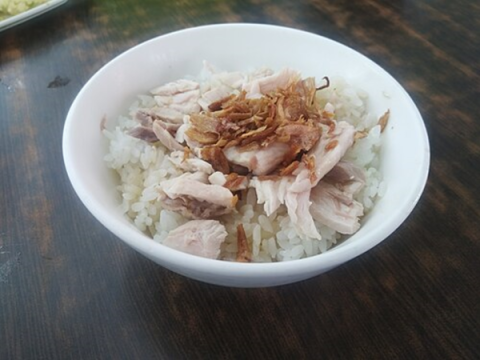
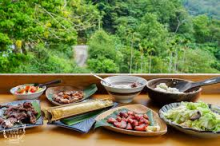
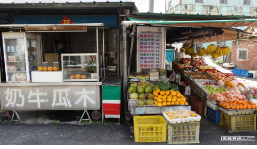

| 排隊美食 | |
根據地方耆老說法，二戰結束之後許多駐台美軍（主要為美國空軍）駐紮於此地區，美軍將火雞帶入之後，由嘉義附近地區養殖戶大量繁殖。因戰後各項物資缺乏，一般人要吃雞肉不容易，火雞較大，相對於土雞價格也低，營養價值也高，地方小吃攤想到用火雞當作小吃食材，因此做出類似滷肉飯之雞肉飯料理。傳統南台灣多拿雞胸肉蒸熟剝成雞絲或雞片鋪在飯上、澆上醬汁稱作雞絲飯或雞片飯。 資料來源： 維基百科 |
 |
| 網美餐廳 | |
提到嘉義阿里山美食，不能錯過這間人氣超高的「游芭絲鄒宴餐廳」。 用餐環境採半開放式的空間，能直接享受山林間的清新空氣，放眼望去阿里山美景盡在眼前，有種遠離塵囂的感覺。這裡以原住民特色美食為招牌，提供鄒族原木烤肉、山地大香腸等料理，最後還要喝杯「黑糖野生愛玉」當結尾超享受。 資料來源： 維基百科 |
 |
| 懷舊時光 | |
而位於溪口老街口、僅販售五種品項的無名小攤，現點現打的酪梨牛奶濃醇滑順，搭配些許碎冰增添爽脆口感，不同於當代手搖飲，仍維持手提袋裝插欶管suh-kóng（吸管）型態，喝著古早味水果乳品、漫遊在舊名「雙溪口」的「嘉義縣最小鄉鎮」，就是道地的解熱良方。
資料來源： 維基百科 |
 |